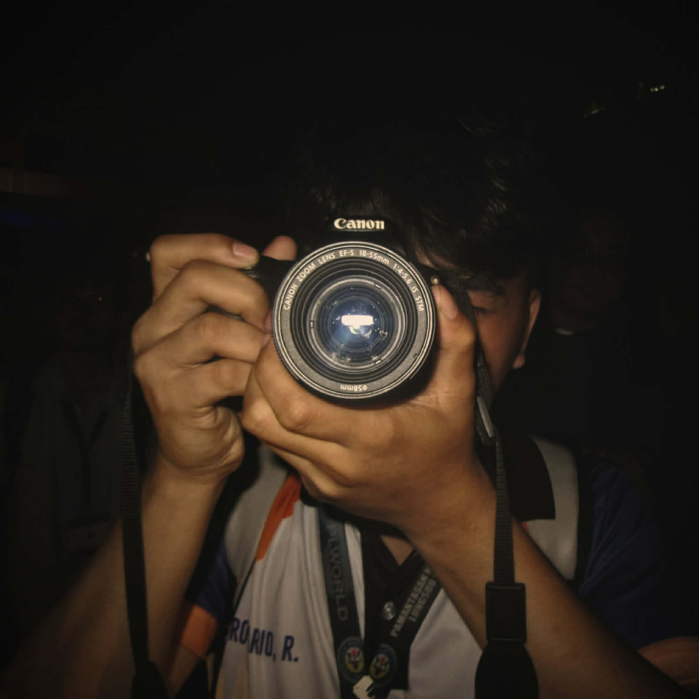
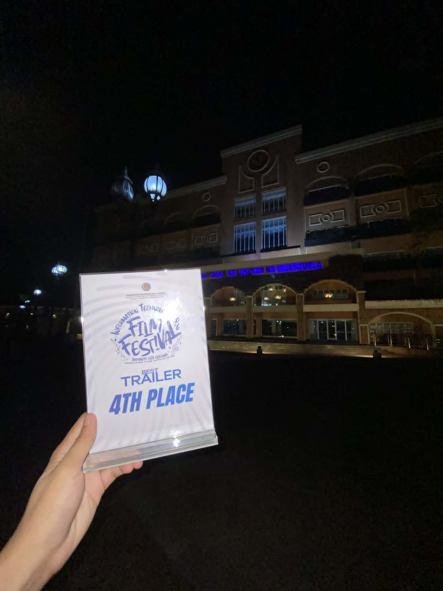
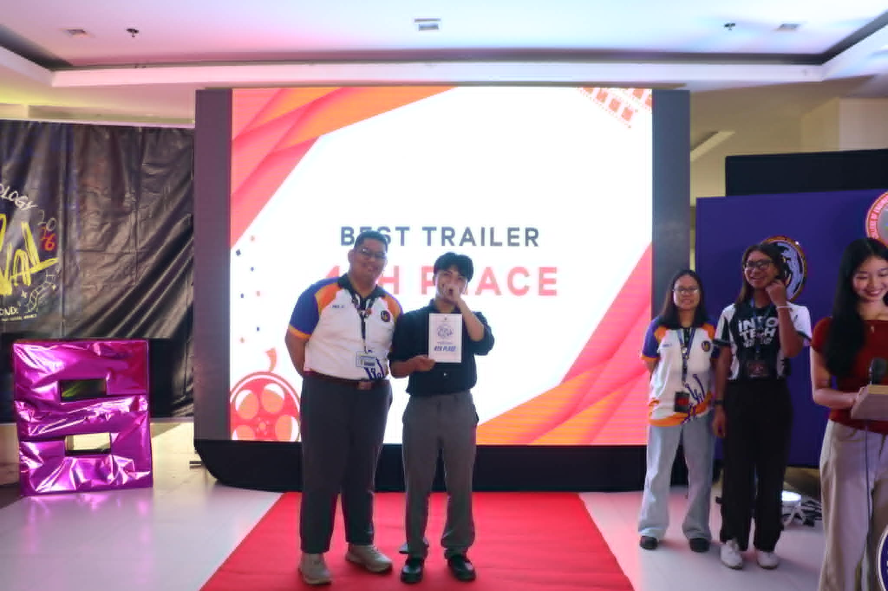

ABOUT ME
I’m a Bachelor of Science in Information Technology (BSIT) student at Pamantasan ng Lungsod ng Valenzuela (PLV) with a strong passion for photography, videography, and multimedia production.
I specialize in capturing authentic moments through creative storytelling, combining cinematic visuals, emotion, and modern editing techniques to produce meaningful and memorable content.
Beyond photography and video editing, I also have experience in event documentation, media coverage, and collaborative production work. I’m dedicated, hardworking, and capable of working effectively both independently and within a team.
MY JOURNEY
Champion in Mobile Photography during 11th Grade and awarded 4th Place Best Trailer in our College Film Festival as a 2nd Year BSIT student. These achievements reflect my passion for creativity, storytelling, and visual arts.
Created and participated in film trailers, short films, and school productions that focus on creative storytelling, editing, cinematography, and visual presentation for academic and festival projects.
Started my photography journey through mobile photography and continued developing my skills in capturing events, portraits, and creative shots. Passionate about visual storytelling, editing, and exploring different styles of photography.

